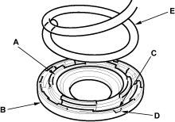
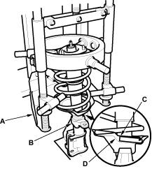
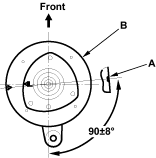
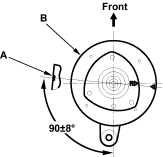

Reassembly
NOTE: Refer to the Exploded View as needed.
- Install the upper spring mounting cushion (A) on the upper spring seat (B) by aligning the log portion (C) on cushion with cutout (D) in the seat.

- Install the spring (E) in the groove of the cushion securely fitted.
- Install the damper mounting bearing and damper mounting base on the upper spring seat.
- Install the upper spring seat and the spring on a commercially available strut spring compressor (A) and compress the spring lightly.

- Insert the damper unit (B) up through the compressed spring.
- Align the bottom of the spring (C) and the stepped part (D) of the lower spring seat.
- Check that the cutout (A) in the side of the upper spring seat (B) is in position shown. If the cutout is out of position, repeat to the step 1 and reassemble the spring and upper spring seat accordingly.
Left side:

Right side:

- Hold the bottom of the damper with your hand and compress the spring. Do not compress the spring excessively.